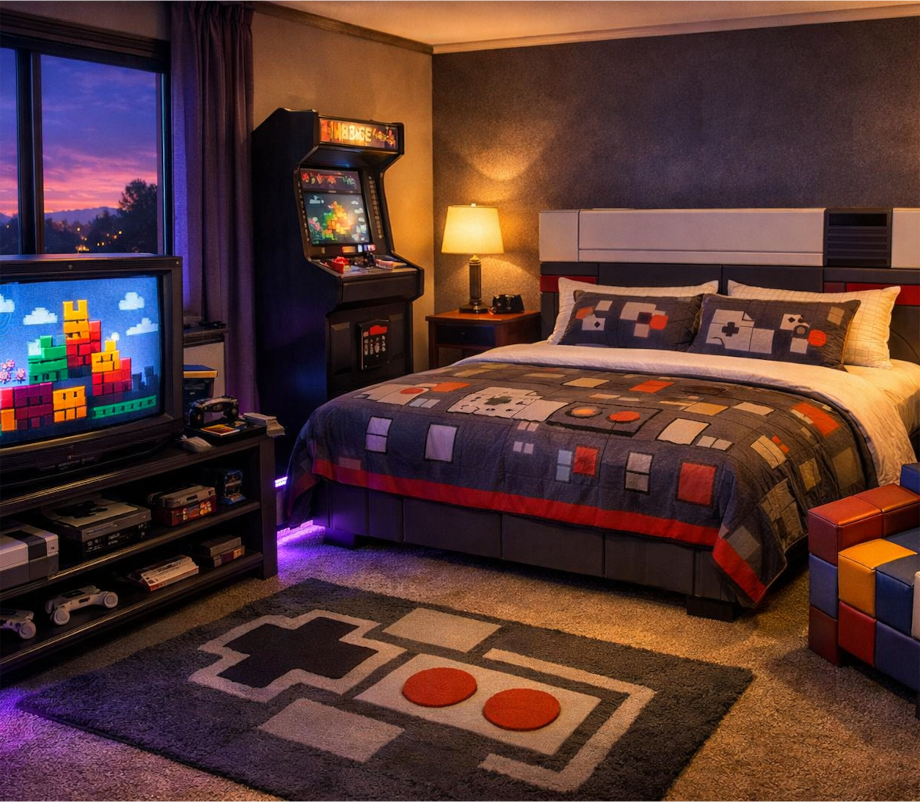

The Check Point
A cozy retro gaming-inspired room made for relaxing, playing classic games, or taking a break between life's busy moments. It's a quiet space built around a nostalgic console–era atmosphere.
The Check Point blends retro gaming with a comfortable, modern space built for relaxation and rest.
There is a real CRT television where you can play classic console games, sit down with original retro systems like the Atari, NES or Sega Genesis, or spend time with vintage arcade–style titles.
The room is focused on classic gaming and nostalgia.
When you're not playing, the room stays calm and comfortable — soft lighting, a comfortable bed, and a simple layout designed for rest, peace, and quiet when life gets loud.
It is a place to pause, reset, and continue on.
- Real CRT television
- Original retro game consoles (NES / SNES / Sega Genesis units)
- Asteroids vintage arcade cabinet
- Tetris–inspired furniture
- Soft purple ambient lighting accents throughout the room
- Checkpoint–inspired lighting
- King–sized bed with modern comfort mattress
- Blackout curtains for full room darkness
- High–speed Wi–Fi and bedside/desk charging ports
- Sound–dampening walls for quiet play or sleep
A place where classic gaming meets modern comfort.
